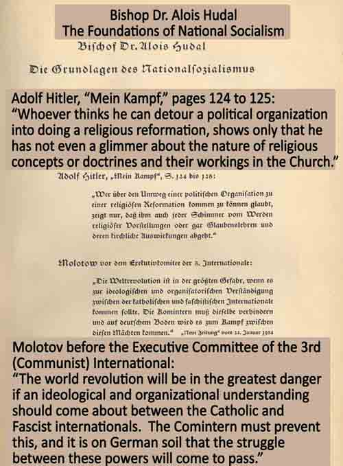

secret codicil: This provision exempted Catholic clergy and seminarians from military service in the event of a German military draft, while requiring that they be available for chaplain or other non-combatant services. The provision is reprinted in Ludwig Volk, Das Reichskonkordat vom 20. Juli 1933 [The Reich Concordat of July 20, 1933] (1972), pp. 244, 254.
protest notes: Cardinal Pacelli sent 14 diplomatic notes to German Ambassador Diego von Bergen during the six-month period from January 22, 1935 to July 26, 1935. Albrecht, Note Exchange, vol. 1, pp. 190-268.
document of May 10, 1935:
From the German Embassy to the Holy See to the Foreign Office, Berlin.Subject: “L’Osservatore Romano” on Morality and Consequences (Fascism and National Socialism).
The “Osservatore Romano” (No. 109 of the 9th of this month) calls attention to a series of contradictions in which the “Emiliano Courier” of Parma entangles itself, in that it praises the same phenomena in Fascism that it criticizes in National Socialism...”
third week of July: The issues of the weekly newspaper Der Stürmer do not bear a date, but only a month. The week of publication can be calculated from the issue number. Issue no. 29 was published in the 29th week of 1935, thus the third week of July.
companion piece: “Priests and Pfaffen”
Priests are those “who feel inwardly compelled to stand by heavily burdened people in their sufferings and sorrows ... they even love their enemies ... Priests never point a finger at their fellow creatures, because they know that they themselves are only – human. Priests do not make common cause with Jews.”Pfaffen are “people who want to appear better than they actually are. Pfaffen are hypocrites ... Pfaffen are men for whom the consecreated garb of the priesthood serves only to gratify their egotism ... Pfaffen are men who have no qualms about exalting the Jewish people as the people of God.”
Source: Der Stürmer, no. 29 (July 1935), p.3.
Note: Pfaffen had been used as a term of contempt toward priests in Germany long before the Nazi era, as seen for instance in the book Der Pfaffenspiegel [The Pfaffen-Mirror] from the mid-19th century.
short piece: “Who Governs Russia”
“Excerpted from the anti-Jewish Belgian newspaper ‘L’Assaut’ no. 18 of May 3, 1935“This question receives a categorical answer through the following enumeration of the approximately 550 upper and highest level officials of the Soviet paradise. There are 447 Jews without a fatherland, 30 Russians, 34 Latvians, 22 Armenians, 12 Germans, 3 Finns, 2 Poles, 1 Georgian, 1 Czech, 1 Hungarian.
“These figures are excerpted from the official Russian daily press, such as Isvestia, Golos Truda and Rote Zeitung.”
Source: Der Stürmer, no. 29 (July 1935), p.5.
memorandum by German Foreign Office official: Translation from the text reprinted in Albrecht, Note Exchange, vol. 3, p.112:
Memorandum by Menshausen, Berlin, August 1, 1935Subject: Defamation of the Pope
Yesterday evening the Nuncio delivered informally the attached brief note (footnote: no attachment found) with the remark that he was for the present disinclined to make a formal written protest, since he was convinced that the Foreign Office would want to act of its own accord to remove the picture of the pope with the “malicious graffiti” from the “Stürmer” display case at 86 Kurfürstenstrasse.
Note: There are multiple instances of Nuncio Orsenigo submitting protests or otherwise writing about Nazi publications in the course of his work as Vatican Nuncio, including the Stürmer (May 5, 1934, Note Exchange vol. 3, pp. 24-25), Angriff [The Attack] (Sept. 2, 1935, Note Exchange vol. 3, p.120), Siegrune (Oct. 4, 1935, Note Exchange, vol. 3, p.130), and the SS weekly Das Schwarze Korps [The Black Corps] (Nov. 4, 1935, Note Exchange, vol. 3, p.138).
Gustavo Martinez Zuvíria: Martinez Zuvíria was a prolific Argentine novelist from 1905 to 1930. In 1931, under the military regime that took power by a coup in 1930, he was appointed Director of the Argentine National Library in Buenos Aires, a post he held until 1954. He published two works of non-fiction in the early 1930s, Confidencias de un Novelista [Confidences of a Novelist] in 1931 and Don Bosco y su Tiempo [Don Bosco and His Times] in 1932.
Martinez Zuvíria published his novels under the pseudonym Hugo Wast, which he devised by making an anagram from a variant of his first name, “Ghustawo.” We have not found any indication that any of the 19 Hugo Wast novels published from 1905 to 1930 were antisemitic. Although novels such as Ciudad Turbulenta, Ciudad Alegre (1919) included subject matter that could easily occasion antisemitic utterances by an author so inclined, such as banking, political movements of liberalism, radicalism, and anarchism, Old Testament prophecies against apostasy and idolatry, New Testament passages about Pharisees, and Holy Week liturgies and observances, Martinez Zuvíria did not appear to use such opportunities to introduce antisemitic matter into his novels from 1905 to 1930. While Martinez Zuvíria says in the introduction to El Kahal that he was suspicious of Jews from an early age, the antisemitism of his 1935 novels stands in apparent contrast to his previous corpus of fiction.
Protocols of the Elders of Zion: A fraudulent document first published in the early years of the 20th century in Czarist Russia. The document purports to be meeting minutes (“Protokoll” in both Russian and in German) of secret Jewish conspirators who were using control over gold, money and Masonic lodges to gain world power, in order to destroy and dominate formerly Christian countries and civilizations.
explained the Russian Revolution:
The author's introduction to El Kahal set forth a clear summary of the conspiracy theory at the heart of the novel, with Jews engineering financial power in order to ...
"... first lead to crisis, then to war and, finally, to revolution."The Jew foments it, directs it, subsidizes it, and after making a tabula rasa of the Christian state, suffocates it and installs himself in the empty Capitol, to govern under the inspiration of the Kahal, the precursor of the Antichrist.
"The Russian Revolution is a current and complete example."
Henry Ford accused: See Chapter 15, entitled "Is the Jewish 'Kahal' the Modern 'Soviet'?" in Ford's The International Jew (1920). The Protocols of the Elders of Zion also contain references to "Kahal" or "Kehillah."
article in Civiltà Cattolica: August 3, 1935, vol. 3, pages 295, 296, 297, 298 and 299.
Gold, Money and the Jews (H. Wast)Gold is the dominator of the world! This has been said and repeated through the centuries...
Vain lament! The dominion of gold is fatal, because it constitutes the only monetary basis in all the world, and money is necessary for commerce and all trade, without which there is no social life.
Its tyranny would only be shaken by devaluing it as the basis of money and reducing it to its own value as a metal in proportion to its real utility for human uses; taking away, in sum, its symbolic artificial value and giving its real value.
That was precisely the dream of a great humanist, great saint and great martyr of conscience, Thomas More. In Utopia he says that only human folly has attributed a value to gold for its rarity and not for its utility, which is much lower than that of iron; for this reason the citizens of Utopia, who have no money, do not use gold for anything noble or decent, such as ornaments and vessels for food and drink, for which they use instead glassware or pottery, but for the most sordid and vile vessels and for chains of those sentenced for crimes, and as a sign of opprobrium upon those who are publicly deemed infamous and must wear earrings, rings, bracelets, necklaces and crowns of gold. A worse devaluation cannot be imagined!
But that imagination of More is nothing but a satire of human folly and greed ...
Now we see a modern writer taking up and amplifying – most probably without ever having thought of the great work of his predecessor – the same dream of More: the devaluation of gold, in a manner better adapted to our times. The illustrious writer and prolific novelist Hugo Wast (footnote: literary pseudonym of Gustavo Martinez Zuviria, whose works we have spoken about many times in Civ. Catt. and purposefully in 1924, vol. 3, pp. 232 ff.¬), who has described so many times and in the most varied scenes, with picturesque palette and effective dramatic style, the life and customs of Argentina, has published in two volumes a novel (footnote: El Kahal, Oro), which is, in the language of today, “sensational”: a sort of modern “utopia.” He believes it possible, such is the vividness and verisimilitude of the details with which he describes it, intertwining the most recent events, such as the great Eucharistic Congress celebrated in Buenos Aires just a few months ago.
The thesis of the novel, in two parts, is the following:
The basis of money and thus of commerce and politics of the nations, in the whole world, is gold. Gold, for the most part, that is three-quarters, is hoarded and “controlled” by the Jews, who crave and seek to acquire the remaining fourth and so possess all the world’s gold. (footnote: As one of the proofs of this gathering of gold by the Jews, Wast, in the introduction to the first part of his novel, brings up the fact that, in Buenos Aires and in all the cities of Argentina, prominent signs are seen: “I buy gold.” “We buy gold.” “Gold, gold, gold, we pay the highest price.” Also in Rome and in other cities of Italy we see the same signs: “I buy gold.” “We buy gold ...”) So the Jews, the bosses who control the gold and thus the value of money, effectively control commerce and channel economic crises, actually guiding politics and deciding about war: everything in order to completely enslave Christians, destroy Christianity and establish Jewish world domination, which personifies their long-awaited “Messiah.” The present economic crisis is, in fact, according to Wast, the result of the Jewish hoarding of gold. To shake off this domination it is necessary to dethrone gold, “the only god of the Jews,” by devaluing it as the basis of money and reducing it to its industrial value, like all other metals. Down with gold, god of the Jews, bogus idol of the world! But how?
Here the fertile imagination of the novelist comes into play with a supposition, not far-fetched, which he presents powerfully with all the appearance of a real current event. The scene is set in the great metropolis of Buenos Aires, where the Jews, who numbered only 366 of 443,000 inhabitants in 1887, have grown so numerous (not specified precisely, because the last census did not take note of religion), increasing constantly, to the point that Wast claims Buenos Aires is the third city of the Jewish world after New York and Warsaw. They dominate because of the great Jewish bankers and the Synagogue with its Kahal, or supreme council, which maintains the unity of the Jews; so that even the richest among Christians are inevitably undermined by the usury of the Jews, the hoarding of gold and the holding of money.
... Both these characteristic rebels, powerfully sculpted by the literary style of Wast, are smitten by Grace, like Saul on the road to Damascus, at the great Eucharistic Congress, which our novelist, who was a spectator and a participant, depicts brilliantly, with the impact of a thunderbolt, as a great artist and a profound believer.
With the conversion of these two unique protagonists the novel worthily reaches its conclusion. It would have been more opportune, therefore, to omit the appendix on the “Antichrist” and some fantastic pseudo-prophecies...
This is not an antisemitic novel. Wast does not proclaim any crusade or any persecution against the Jews. It is much more a warning to Christians, especially those of Latin America: “That the Jew among you not mock you” (Par. 5, 81). It is a clear affirmation of living faith culminating in the memorable Eucharistic Congress, the richest thus far of the wonders of Grace of the true and only King of the world, Jesus Christ. In sum, if not a solution of economic questions, this is at least a balanced satire, not unworthy to stand in comparison with the Utopia of St. Thomas More.
Historians: Graciela Ben-Dror describes in detail the content of El Kahal and Oro, their impact in Argentina, and their promotion by Catholic publications and associations in Argentina. The Catholic Church and the Jews: Argentina, 1933-1945 (2008). In a leading history of the Protocol, Norman Cohn describes Martinez Zuvíria’s reworking of the Protocols into a novel about the Jewish world conspiracy, and says that some Roman Catholic clerics cooperated with this propaganda. Warrant for Genocide (1996), p.266.
Manuel Gálvez: A prominent conservative Catholic author in Argentina, Gálvez was a regular contributor to Criterio from the journal’s inception in the late 1920s. The quotation is from his 1936 piece “Comentarios a una Carta,” Criterio, no. 429 (1936), p.61.
Ben-Dror states that Gálvez was dropped as a contributor to Criterio because of this piece. (p.48) Our examination of Criterio in 1936 confirms that Manuel Gálvez does not appear following the publication of the piece in question. Articles by his wife do appear, however, perhaps indicating that the editor of Criterio, Msgr. Gustavo Franceschi, who presumably made the decision to publish Gálvez’s piece in the first place, did not fully embrace the decision to discontinue him as a contributor. Franceschi was the most prominent Catholic intellectual in Argentina, and he made a conspicuous visit to Israel to seek reconciliation with the Jewish people, after Cardinal Copello departed as Archbishop of Buenos Aires.
article: L’Osservatore Romano, August 4, 1935, page one.
"The Religious Situation in Germany: Observations and Clarifications"This past July 7th His Excellency Dr. Frick, Interior Minister of the Reich, made official statements in Münster which our newspaper demonstrated in an article in the July 15-16 issue, “Concordat Questions in Germany,” to be irreconcilable with the Concordat concluded on July 20, 1933 between the Holy See and the German Reich.
Ten days later, the Prussian Press Office and the “German News Bureau” published a summary of a circular decree of His Excellency Mr. Göring, Minister President of Prussia and head of the Secret State Police, to the local governing authorities, which spoke of a supposed “political Catholicism” and exhorted them “to proceed with all legal means against those ecclesiastics who abuse their spiritual ministry for political ends.”
... From our point of view, for addressing today’s religious tension one could not find a more erroneous and fallacious formula than the pretended “political Catholicism.”
The Minister President of Prussia has declared that he is against a “Kulturkampf.” We are sad to say that the facts tell an entirely different story. The real situation is that the Bishops in Germany do not have the freedom to preach the Gospel or to apply it to the issues of the day, without subjecting themselves, under the decree in question, to penal sanctions...
Spiritual ministry in the churches and schools, in the associations and organizations, is subjected to continual hostile spying, which could not be more odious.
Under the circumstances, the Minister President’s declaration that he does not want a “Kulturkampf” lacks genuine meaning, and cannot, as might be the case in other circum- stances, lull Catholics into complacency. “Kulturkampf” in Germany is no longer a danger for the future; thanks to Rosenberg and his fellows, it is a tragic reality in the present...
article in Civiltà Cattolica, vol. 3, August 17, 1935, pages 426-427, 428-429 and 430-431.
"The Religious Persecution in Germany"The ordinary conditions of the Church, living and progressing in the midst of opposition and persecutions, has become worse in our times in many countries. Above all this is because modern persecutors, more than former ones, have come up with various political justifications ... Among these in the past century, for example ... were the famous ones in Germany under Bismarck, in the longlasting persecution against Catholics ... which was called "war of civilization or culture" or "Kulturkampf." ...
Today ... vexations by the German government are multiplying and becoming worse every day towards Catholics ... extreme of a paganism ... defense of the government and the Nazi Party against its opponents and enemies.
Such is the sense, in spite of ... the article in L’Osservatore Romano on August 4, 1935, which reported ... the recent episodes of persecution...
The 7th of July His Excellency Dr. Frick, Reich Interior Minister, made an official declaration which our journal covered in the article “Concordat Questions in Germany,” showing that it was irreconcilable with the Concordat concluded on July 20, 1933 between the Holy See and the German Reich.
Ten days later, the Prussian Press Office and the "German News Bureau" published a circular decree of His Excellency Mr. Göring, Prussian Minister President and head of the Secret State Police, to the higher local authorities, which spoke of a supposed "political Catholicism" and called them "to proceed with all legal means against those ecclesiastics who abuse their spiritual ministry for political ends.”
... The decree gave the impression that it concerned a considerable number of members of the Catholic clergy who, under the Concordat, were guilty of abusing their spiritual character for political ends.
Freemason lodges: Otto Dov Kulka and Paul Mendes-Flohr, Judaism and Christianity under the Impact of National Socialism (1987), p.676. We noticed occasional hostile references to Freemasons in Hitler’s speeches of the early 1920s. These were orders of magnitude less in frequency and intensity than his attacks on Jews.
The Kulka and Mendes-Flohr work also discusses the “new wave of anti-Semitism” by means of intensified antisemitic propaganda and terror against Jews during the course of 1935 in Nazi Germany, which “continued on with varying degrees of intensity until after proclamation of the Nuremberg Laws.” (pp. 582 ff.)
special edition of Der Stürmer: These are the main features on the first page of the special edition, which included two dozen pages, rather than the usual half dozen, of antisemitic propaganda – all of it directed in this case to proving the Jewish-Communist conspiracy theory and motivating Germans to “defend” against it:
Banner headline: “Murderers from the Beginning”Sub-headine: “Jewish World-Bolshevism from Moses up to the Comintern”
Inside page caption under photograph of Joseph Stalin: “The Non-Jew Stalin”
Subcaption: “Comes from Georgia. He is not the dictator of the Soviet Union. He is, just like Lenin, an instrument in the hand of the Jews. The daughter of the Jew Kaganovich is his wife.”
Caption under photograph of Lazar Kaganovich: “The Jew Kaganovich - The real dictator of the Soviet Union.”
report: Civiltà Cattolica, September 7, 1935, pages 554-555, 556-557 and 558-559.
News Chronicle (Germany): In our last issue we mentioned an escalation of Nazi totalitarianism against Catholic sentiment. The demonstrations in Münster did not remain isolated. Fr. Frick, the Reich Interior Minister, as noted, reiterating the idea expressed at the Congress of Münster, engaged the competent authorities to repress vigorously all movements against the sterilization law...Also the struggle against the Jews is marked by a fresh outbreak of violent incidents. In Berlin, on July 16, a Swedish film of antisemitic bent was shown. Then, because there was a move among the Israelites to protest against the showing, the Nazi paper Angriff called upon Nazis to react forcefully against “Jewish arrogance.” The arrest of a soldier who had beaten a Jew was the occasion of a violent scuffle. Two thousand Nazis sought and obtained the release of the soldier. Then the demonstrators went to the Kurfurstendamm, devastated the Bristol Cafe, pounded the Jewish owner of another café with their fists and beat up some passersby who they thought were Israelites. Other antisemitic demonstrators were also in the area, for which they tried to cast the blame on provocations by the Jews; but it is to be remembered that Goebbels, the Reich Propaganda Minister, in official speeches he gave on June 29 at the Sport Palace and at Tempelhof, had ordered the strengthening of antisemitic action. And Goebbels’ delegate for vigilance over Jewish activity in the artistic-intellectual field, on August 7, upon being informed that the Jewish League, which heads the organizations of Israelite writers, artists, musicians and actors, has 30,000 members in Berlin alone, and that in Berlin and other cities of the Reich there are theaters managed by Jews, where it is exclusively Jewish artists who act on stage, announced that he would make sure that the audiences were composed exclusively of non-Aryans. In many places, signs are being posted that forbid access for Jews; many town mayors are promoting a boycott against those Germans who do business with Jews; and because hotels that are favored by a Jewish clientele are being threatened with closure, in some places hotel owners have decided not to admit Jews.
coverage: L’Osservatore Romano, September 13, 1935, page one.
“Hitler’s Proclamation at the Congress in Nuremberg”Yesterday morning in the Luitpold Hall was the official opening of the Congress of the National Socialist Party. The immense hall was filled with more than 15,000 persons from the Party’s organizations.
In the front row were the guests of honor, including Minister of War von Blomberg, the other ministers who are not members of the party, and foreign diplomats. Chancellor Hitler entered the hall, which was magnificently decorated in white, red and gold, accompanied by his staff, and went up on the stage to sit down with his lieutenant Rudolf Hess; the head of the SA, Victor Lutze; the head of the SS, Himmler; and the political head of the Franconia district, Julius Streicher. Immediately afterwards, the flags entered the hall, preceded by the “blood flag,” and the head of the SA, Lutze, read the list of the fallen Nazi Party members, while those present stood and raised their right arm.
Then Hitler’s lieutenant Rudolf Hess declared the opening of the Congress, giving a speech of welcome to the Chancellor. Hess recalled in his speech that the high point of the year was the re-establishment of the military freedom of Germany and alluded also to the new Bolshevik menace arising in the world from the latest Communist International Congress, affirming that Germany continues to be the strongest bulwark against the international expansion of Bolshevism.
Then Julius Streicher took the rostrum to welcome all the participants ...
Hitler issued a proclamation, which we reported yesterday, recalling that the first Congress of the Party since its rise to power was focused on the achievement of victory, the second on the consolidation of power, and the third Congress is now on freedom. After mentioning the new positive results achieved in the struggle against unemployment, the Chancellor gave a pessimistic description of the world situation.
“National Socialists understand me ...
“The Marxist theorists who say ‘no more war’ are in fact themselves the greatest instruments of a future war. The apostles of reconciliation among peoples in practice actually fill the world with hate ...
“Germany can help in all matters with tranquility, resolved not to be any longer a passive instrument in the game that has been played until recently. For our security is not gained by means of treaties, pacts and accords of whatever nature, but by means of the real strength that resides in the people and in the nation.
“Yet we feel all the more secure to the extent that neither the government nor the German people want anything more than to live in peace and friendship with neighboring nations.”
The German Army is the protector of the peaceful work of Germany.
Our party, continues the proclamation, is a “militant party,” because it continues with greater vigor the struggle against its traditional enemies. These are: Jewish Marxism and parliamentary democracy, its ally the Catholic Center Party, which is pernicious from a political and moral point of view, and finally some incorrigible reactionary bourgeois elements.
The struggle against these forces will continue without vacillation or diminution.
The patience of the Government has been misunderstood by the Jews, and the National Socialist State will continue on its course to overcome this grave danger.
Hitler then criticized severely those priests who apply themselves to politics more than to pastoral care, also asserting it is a calumny to accuse National Socialism of conducting an anti-Christian struggle ...
Note: L’Osservatore Romano inserted the following commentary at the end of its report of Hitler’s proclamation:
“If the transmission of these words is accurate, we do not know whether it is inexplicable that the dissolved Center Party was included among forces still operating in Germany, or whether it was confused with those that, because they profess principles opposed to Christian morality and to the social teaching of the Church, are pernicious ‘from a political and moral point of view’ to the ordered life of the people. On the other hand, it is perhaps perfectly understandable that since it is now customary in Nazi circles to mention ‘those priests who apply themselves to politics more than pastoral care,’ insofar as this is the only way to pretend the conflict with the Church in Germany is not an anti-Christian struggle, but simply political; while the activity of the clergy today in its sacred ministry, against hostile doctrines and laws, is not partisan, but is strictly in accord with the defense of Catholic dogmatic and moral principles, and with pastoral care.”
traditional enemies: The reference to “Jewish Marxism” can be understood in at least two senses. One, Hitler and the Nazi Party propagandized against the supposed Jewish-Communist world conspiracy from the early 1920s. Two, Nazi propaganda branded the Social Democratic Party as “Jewish-Marxist.” That political party and its Munich newspaper, the Münchener Post, were the most vigorous force opposing the Nazi Party as it grew in Munich during the early 1920s. Similarly, when the Nazis became a significant bloc in the Reichstag beginning in 1930, the Social Democratic Party was the largest parliamentary opposition force.
The Catholic Center Party was also a force opposing the Nazis, during the 1920s, and in the early 1930s in the Reichstag. The Center Party regularly formed governing coalitions with the Social Democrats in Berlin, beginning in 1919 and continuing through the 1920s.
speeches by Hitler: L’Osservatore Romano, September 15, 1935, page one.
“Proceedings in Nuremberg: Three Other Hitler Speeches”Berlin, Sept. 14. As reported:
Yesterday Chancellor Hitler spoke three times: to 100,000 leaders of the political associations of the Party ... to the delegates of the Nazi overseas organization; and to representatives of women’s organizations.
To the political leaders Hitler declared the solidarity that exists between the Führer and those who exercise leadership functions ...
Any effort to sow discord between the Führer and the leaders will be futile ... The struggle for power is not finished: on the contrary, the Nazi Party must continue the struggle to become more worthy every day of the mission it has assumed before the German people ... Hitler also spoke about the German army, declaring that it does not pursue imperialistic goals, but only defensive goals for the existence and work of the German people ... At the end of the speech Dr. Ley shouted: “Adolf Hitler is Germany, Germany is Adolf Hitler: long live Adolf Hitler” ...
In the meeting of the women’s associations of the Party, Hitler rejected the accusation often leveled against Nazism, that it does not allow to women, in the life of the nation, as elevated a place as they occupy in other countries. Such an accusation is unfounded, because Nazism attributes a fundamental importance to women not only as mothers, but also as educators of future generations.
rationale: As British historian Norman Cohn states: “In the non-stop propaganda campaign which accompanied these measures the Protocols and the Jewish world-conspiracy bulked very large indeed.” Warrant for Genocide (1996), p.221. Nazi propaganda chief Goebbels, in his diary, noted the emphasis of the 1935 Nazi Party Congress, in the opening proclamations of Hitler and others, against Bolshevism and Judaism. Die Tagebücher von Joseph Goebbels [The Diaries of Joseph Goebbels] (2001), Part I, vol. 3/I, pp. 291-292.
Cohn devotes a chapter to the role of the Jewish-Communist conspiracy myth in Nazi propaganda. The chapter begins: “The Protocols and the myth of the Jewish world-conspiracy were exploited in Nazi propaganda at every stage, from the first emergence of the party in the early 1920s to the collapse of the Third Reich in 1945.” (p.214)
communiqué from Orsenigo to Pacelli: The relevant passage reads:
I do not know whether Russian Bolshevism is the exclusive work of the Jews but here the way has been found to make this believed and to take measures in consequence against Jewry. If, as it seems, the Nazi government will have a long life, the Jews are destined to disappear from this nation.Source: Peter Godman, Hitler and the Vatican (2004), p.80, quoting in translation from Vatican Secret Archives, AES, Germania, 1935, “Scatole,” fasc. 9a, 32-33.
diary of Goebbels: “Friday morning I gave my speech to the Congress. With glowing success. The Führer was highly enthusiastic. Storms of applause. My material had tremendous impact. That should make a splash in the world press.” Goebbels, Tagebücher, Pt. I, vol. 3/I, p.292.
inherently non-credible theory: The Jewish-Communist conspiracy theory, as discussed in detail below, gained credibility in the Catholic world during the 1920s by means of fabrications and distortions of facts. As of 1935, the inherent implausibility of the conspiracy theory was particularly self-evident. Soviet Communism was controlled by an absolute dictator, Joseph Stalin, who was not Jewish.
The realities of Soviet Russia were known to Pope Pius XI and Cardinal Pacelli. Beginning in 1918, in their roles as Vatican diplomats posted to Germany and Poland, they had been involved in Vatican negotiations with the Communist government that came to power in Russia in November 1917. Nuncio Pacelli continued to be involved in such negotiations until 1927, under the pontificate of Pius XI (1922-1939). Gerhard Besier, The Holy See and Hitler’s Germany (2007), pp. 43-48.
Hitler’s speech: L’Osservatore Romano reported Hitler’s words at length, including this passage about the rationale of the Nuremberg Laws:
... Hitler said that the revolutionary maneuvers of international Communism will be fought in Germany by all possible means. It is a fact, moreover, that Communist agitators are almost all Jewish, just as it was a Jewish official in America who insulted the German flag and whose conduct was disavowed by the United States Government. In Germany there are increasing signs that reveal the effects of international Israelite agitation within the country, such that the Reich Government wants to try to find a solution that will permit, up to a certain point, the German people to co-exist with the Jewish people. If this effort should fail, it will be necessary to examine the situation anew.Source: L’Osservatore Romano, September 16-17, 1935, page 6.
Note: The “Jewish official in America” was a magistrate judge in New York City, Judge Louis Brodsky. Several demonstrators who had torn a swastika flag off the German liner Bremen and thrown it into New York harbor were brought before him on criminal charges. He dismissed the charges on grounds that the flag was not a national flag but a political party flag that amounted to a “pirate flag.” The German Government protested, and U.S. Secretary of State Cordell Hull issued an official statement of regret. L’Osservatore Romano published the following notice in its September 16-17, 1935 issue, on page 6:
The American Government and the “Bremen” IncidentSecretary of State Cordell Hull officially expressed the regret of the American Government for the remarks that Judge Brodsky made in pronouncing a sentence of dismissal for five defendants accused of desecrating the flag of the Bremen, remarks deemed offensive by the German Government. The communication was made to the German chargé d’affaires, noting that the American Government was not responsible, but also acknowledging that Judge Brodsky’s statement was ultra vires.
Göring: His words about the swastika were reported by Time magazine in its coverage of the enactment of the Nuremberg Laws:
“Our Holy Symbol!” In menacing tones General Göring then read out three new decree laws. The first ended the clumsy arrangement under which the German tricolor and the Nazi swastika have been flown together as national flags. Henceforth Germany’s sole flag is the swastika. “It is the anti-Jewish symbol of the world!” thundered General Göring amid deafening cheers. “A soldier from the front lines, Adolf Hitler, pulled us out of the dirt and brought us back to honor... The swastika has become for us a holy symbol!”Source: “Little Man, Big Doings,” Time, September 23, 1935, p.23.
Hitler’s explanation of the swastika: In Mein Kampf (1925-1926), Hitler claimed he designed the Nazi Party flag and said the swastika symbolized the “mission” of the Nazi Party,
the mission of the struggle for the victory of Aryan man and at the same time also with it the victory of the concept of creative work, which itself always was and will be antisemitic.” (vol. 2, ch. 7)The original German reads as follows:
die Mission des Kampfes für den Sieg des arischen Menschen und zugleich auch mit ihm den Sieg des Gedankens der schaffenden Arbeit, die selbst ewig antisemitisch war und antisemitisch sein wird.
Hitler’s meaning: As reported in L’Osservatore Romano,
Hitler began by saying that Nuremberg was chosen as the place for this session because the laws that the Reichstag would be called upon to approve were intimately related to the National Socialist movement which holds its Congress in Nuremberg. Developments have shown the strength of this movement and the unity of the nation. Germany wants to be a sound country, and its institutions are in good order, both in domestic and foreign affairs. The responsibility of its leaders is therefore all the greater. The only possible guide for our conduct is our great, indestructible love for peace.Source: L’Osservatore Romano, September 16-17, 1935, page 6.
Note: September 1935 was the only occasion on which the Reichstag was convened at a Nazi Party Congress. The Reichstag’s legislative role on this occasion was merely for show. Göring announced to the all-Nazi Reichstag delegates that their role under the Führer principle was to vote unanimously for what the Führer proposed.
signaled: An example of German Bishops paying attention to L’Osservatore Romano as an indicator of Vatican policy can be seen in Cardinal Faulhaber’s letter of March 2, 1932 to a Bavarian political figure, telling him “L’Osservatore Romano would not have taken up so agreeably and expressly the proclamations of the German Bishops, if any other kind of opinion prevailed in the Curia.” Faulhaber to Heim, March 2, 1932, Munich Archdiocese Archive, Nachlass Faulhaber, no. 7001, reprinted in Volk, Faulhaber Papers, vol.1, p.602.
violation of Catholic doctrine and canon law: The Nuremberg Laws, by prohibiting Catholic marriages when one party was a “non-Aryan,” infringed the Church’s role in marriage, which was defined in the 1917 Code of Canon Law (canons 1012-1057) and defended vigorously in Papal encyclicals.
In a 1930 encyclical, Pope Pius XI described marriage as a “divine institution” and said that Christ “accordingly entrusted all its discipline and care to His spouse the Church.” Casti Connubii (Dec. 31, 1930), ¶ 1. The encyclical said the laws of marriage “cannot be subject to any human decrees.” (¶ 5) Three paragraphs later, Pope Pius XI quoted from an 1880 encyclical of Pope Leo XIII: “To take away from man the natural and primeval right of marriage ... is beyond the power of any human law.” In the quoted encyclical, Pope Leo denied that “power over the marriages of Christians has ever lawfully been handed over to the rulers of the State.” Arcanum (Feb. 10, 1880), ¶ 24.
The Nuremberg Laws also violated the Vatican-Germany Concordat, which provided that all matters related to Church affairs that were not addressed in the Concordat would be governed by canon law. (Art. 33)
When similar racial laws were enacted by Mussolini’s Italy in 1938, L’Osservatore Romano objected, stating the applicable principles in a front-page article:
"Concerning a Newly Decreed Law"The very recent legislative provisions about marriages of Italian citizens of the Aryan race with persons of other races require an explanation to highlight what is, on a point of such importance, the doctrine of the Church and what is the attitude of the Holy See, especially in relation to the wound inflicted on the Lateran Concordat, which establishes in Art. 34: “The Italian State … recognizes the sacrament of matrimony, regulated according to Canon Law, as having civil effects.”
Everyone knows that the Church of Jesus Christ is catholic, that is, universal. According to the divine precept, the proclamation of the Gospel was carried to all peoples: “go and teach all nations.” Everyone, of whatever race, is called to be sons of God, living members of the living Christ, citizens of the kingdom of the Divine Redeemer on earth, that is his Church. Twenty centuries of history stand witness to this great and wonderful universality. Thus race has never been a discriminating factor among the Catholic faithful. The Church addresses itself to persons of any race: it has instructed them if ignorant; it has educated them if savage; it has perfected them if they are already civilized. And with a slow labor that is sometimes dangerous and difficult, the Church has always sought to break down the barriers that separated humanity spiritually and to create and develop in everyone sentiments of fraternity and love.
But, at the same time, as teacher and custodian of the true faith, the Church has always been preoccupied to keep the faithful away from the danger of losing this inestimable gift. And since one of the gravest dangers for those who believe is precisely marriage to a person who does not profess the Catholic faith, here the Church stands ready to impede such dangerous unions with her wise legislation. In fact there have been canonical impediments for centuries to oppose such. One of them prohibits marriages between Catholics and non-baptized persons (Jews, pagans, etc.). The other prohibits marriage between Catholics and non-Catholic baptized persons (heretics, schismatics). From these impediments, the Church grants dispensations only when serious reasons intervene, when there are guarantees that the Catholic spouse will not encounter obstacles to his faith, and when all children, without exception, will be baptized and raised Catholic.
The Decreed Law approved by the Council of Ministers in the session of the 10th of this month prohibits and declares null and void all marriages between Italians of the Aryan race and persons of other races. No exceptions are allowed; there is no provision for dispensations. Thus the contrast between the recent Italian law and the Canon Law is clear.
Source: L’Osservatore Romano, November 14-15, 1938, page one.
Note: The failure of the German Bishops in 1935 to raise these points of Catholic doctrine and canon law in objection to the Nuremberg Laws is understandable in light of the signals apparent in the Vatican newpaper’s coverage of those laws and their rationale. Why L’Osservatore Romano objected to these aspects of the Italian racial laws in 1938 but not to similar aspects of the German racial laws in 1935 is a question that we have not found addressed by any historian.
Dietrich von Hildebrand, the exiled anti-Nazi philosophy professor from Munich, applied Catholic doctrine in this critique of the Nuremberg Laws two years after their enactment:
They are, from every point of view, irreconcilable with the spirit of the Christian West. They treat Jewry as a purely racial phenomenon and, in a childish manner, make the Jewish ‘race’ responsible for all moral decay. Moreover they betoken an overreaching of the state into the inalienable rights of the human person, and finally they trample underfoot the dignity of the human person by their defamation of people... We want to make clear at one glance the entire monstrosity and inhumanity of the Nuremberg racial laws: by the posture of these laws toward the highest human bond, marriage. What a great and profound matter it is when two people unite themselves to each other for their entire lives, when they give themselves to each other completely in an ultimate commitment of love in the bond of marriage sanctified by God! ... Insolently and with no idea of what they are doing, these laws intrude upon this sacrament, making it dependent upon the proportion of intermingling of Jewish blood, whether two people are allowed to enter into this most profound society of love and life. What a monstrous violation of humanity in its most intimate sphere of life!Dietrich von Hildebrand, Memoiren und Aufsätze gegen den Nationalsozialismus [Memoirs and Essays against National Socialism] (1994), p.353, reprinting Hildebrand’s essay “The Jews and the Christian West,” Die Erfüllung (Vienna, 1937).
regulations in the Papal States: Jews were not allowed the rights of citizenship. They were restricted to living in ghettoes with walls and gates, in Rome and a limited number of other cities where they were allowed at all. Among other restrictions, Jews in the Papal States were not allowed to employ Christians as domestic servants.
historians have reported: Many historians have observed that German church leaders, Catholic and Protestant, did not object to the Nuremberg Laws. An early work on this topic, Guenter Lewy’s The Catholic Church and Nazi Germany (1964), noted that Catholic Bishops did not criticize the Nuremberg Laws, that a German periodical for clergy, the Klerusblatt, approved them, and that Archbishop Gröber of Freiburg expressed approval. Lewy’s research was in German diocesan archives, not in Vatican sources.
We have not found any historian who deals with L’Osservatore Romano’s page one article about Jewish-Communism on September 15, 1935. Nor have we found any historian who considers the possibility that the German Bishops’ position on the Nuremberg Laws was influenced by signals of Vatican support for the rationale, content, and implementation of those laws. Fritz Sandmann’s doctoral dissertation, The Position of the Vatican toward Nazism as Reflected in “L’Osservatore Romano” (1965) states that the Vatican maintained a position of “the most extreme reserve” [äusserste Zurückhaltung] toward the Jewish question at the time of the Nuremberg Laws. (p.211) Sandmann does not mention any of the articles on the rationale, content, and implementation of the Nuremberg Laws in September 1935. He mentions two later L’Osservatore Romano articles concerning the Nuremberg Laws, which we will examine, on November 17 and December 25, 1935. (p.212)
Hermann Greive, a German historian who has written probingly about the widespread acceptance of the Nuremberg Laws in Germany, observes that “the Nuremberg decrees were accepted by the Catholic population without large-scale objections, let alone outrage.” He finds the lack of objection remarkable because “the Catholics not only believed in a fundamentally universalistic doctrine, like all Christians, but also had an international organizational center which gave administrative expression to this universality.” H. Greive, “Between Christian Anti-Judaism and National Socialist Antisemitism: The Case of German Catholicism,” in Kulka and Mendes-Flohr, eds., Judaism and Christianity under the Impact of National Socialism (1987), p.172. Like other historians, Greive does not mention the coverage of the Nuremberg Laws and their rationale in L’Osservatore Romano, or the inherent signals conveyed thereby.
detailed summary of Nuremberg Laws: L’Osservatore Romano, September 16-17, 1935, page 6.
"The New Laws"The first of the three laws approved by the Reichstag provides as follows. Art. 1: the Reich colors are black, white and red. Art. 2: the national Reich flag is the swastika flag. This is also the merchant marine flag. Art. 3: the Führer and Chancellor will decide the form of the Reich war flag. Art. 4: the Interior Minister will issue regulations to implement this law.
The second carries the title: “Reich Citizenship Law.” Art. 1 provides that nationals shall be all persons who live under the protection of the German Reich and have particular obligations to it. By Art. 2, citizens are those nationals of German blood or kindred blood who by their conduct have shown their disposition toward loyal service to Reich and people. Art. 3: the right of citizenship is conferred by means of citizenship papers. Art. 4: Reich citizens are the only ones who enjoy fully the political rights recognized by law.
The third law is called: “Law for the Protection of German Blood and Honor.” It prohibits marriage between Jews and nationals of German or kindred blood. Such marriages are null and void, even if contracted abroad (Art. 1). Also prohibited (Art. 2) are extra-marital sexual relations between Jews and nationals of German or kindred blood. Jews (Art. 3) may not take into their service females of German or kindred blood under the age of 45. Jews may not display the national flag or colors: but they are authorized to display their own under the protection of the State. Male and female violators of Art. 1, and male violators of Art. 2, will be punished with incarceration. Violators of Articles 3 and 4 will be punished with a fine or incarceration up to one year.
detailed critique: L’Osservatore Romano, September 16-17, 1935, page 2.
More on the Message of NurembergWe have given a summary of Chancellor Hitler’s message to the Nuremberg Congress and have commented on the part of it that referred to conflict with the Church, to the extent that the relevant passage was communicated accurately.
We have now received the text of the speech. The Chancellor said precisely:
“The party has never intended and does not intend today to fight Christianity... Moreover, by signing a Concordat, we attempted to establish with the Catholic Church a lasting and useful relationship for both parties, which tried to annihilate the organized atheist movement and in that sense purified our entire life from elements that the Christian denominations have or should have fought. But the National Socialist State will not tolerate, under any circumstances, the making or continuing of the churches as a political instrument by any type of detour. There was a time when we fought the political clergy and drove them out of Parliament, when we did not have state power and the other side did. Today we have this power and can fight more easily for these principles. But we will never fight this battle against Christianity or against either of the two denominations. We will fight it to purify our public life from those priests who missed their calling and should have been politicians and not pastors of souls.”
As can be seen, our commentary does not need substantial modification, because our summary the day before yesterday was not substantially different from the text we print today. It still speaks of political priests; it repeats that religion, Christianity and the Concordat are not the motives or the objects of the current conflict: rather, it is only those priests who engage in politics. But the fact remains that so far no one has been able to show when or how, or by what “detour,” the Catholic Church is being made into, or continuing as, a political instrument; because no one has been able to show that the “politics” of which priests are accused is anything other than the teaching and defense of Catholic dogmatic and moral principles, pertaining to pastoral care; all of which are defined in the pastoral letter of the German Bishops’ Fulda Conference as “mixed questions” that relate to “provisions in the Reich Concordat for the peaceful collaboration of Church and State”; as with the activity, in the final analysis, of Catholic Action as recognized and guaranteed in the same Concordat ...
No one has ever been able to show precisely where clergy and Catholics are engaged in politics, except in the sphere proper to sacred ministry …
It therefore seems necessary to decide once and for all to get rid of suspicions or else document the alleged political activity on the part of clergy and Catholics, or declare that those activities which are strictly inherent in the religious and moral mission of the Church are allowed by the same Concordat ...
The question would be cleared up once and for all. Because, with no evidence of party politics, it will be obvious that we are dealing not with actions but with what is inherent in religious life; so that the fight is against Christianity, “annihilating the Gospel.”
Hitler’s speech to troops: L’Osservatore Romano, September 18, 1935, page 8.
The Military Parade in NurembergHitler speaks to the troops: “The stability of the Government is guaranteed forever”
Berlin, Sept. 17
As reported:
Yesterday evening, at the conclusion of the last day of the Nuremberg Congress, dedicated to the new German army, Chancellor Hitler spoke to the troops, saying that that the German people have made an act of indestructible faith, prepared to make every sacrifice in the certainty of continuing to keep the peace of the nation ...
After the speech the great military review took place ...
Late in the evening in the Luitpold Arena, the Congress closed with a new speech in which the Führer traced the history of the German people ... the National Socialist Party, to which alone Germany owes its salvation. Hitler said that for all Germans it is an imperative necessity to recognize blindly and without any reservations, the authority of the National Socialist Party ...
It is not a matter of discussing questions of infallibility: the party requires that the people subordinate their will ... In the face of the indestructible principle of obedience, all must obey. Concluding, the Chancellor declared his unchanging solidarity with the party, which guarantees eternally the stability of the Government and people of the Reich.
one historian: Charles Gallagher, S.J., describes the extraordinary efforts of the United States Ambassador to Italy in 1938 to get some of President Franklin D. Roosevelt's words into L'Osservatore Romano, and the significance of such Vatican press coverage in relation to Vatican policy. Vatican Secret Diplomacy (2008), pp. 77-83. The quotation in the main text is from page 78.
five short pieces in L’Osservatore Romano: September 18, page 8.
“The Swastika Flag on the German Merchant Marine Fleet”The head of German navigation and state counselor, Essberger, ordered that starting today the entire German merchant marine fleet will adopt the swastika flag.
Aboard all ships anchored in port, the solemn ceremony of the changing of the flag was conducted.
September 19: “International Consequences of the New German Laws on Marriage” - Amsterdam, Sept. 18
The German law on the protection “of German blood and honor,” which prohibits marriage between Aryans and Jews, has consequences also in Holland. In fact, in virtue of the treaty of June 12, 1912, a marriage cannot be entered between German subjects of non-Aryan origin and those of Dutch Aryan origin, and vice versa...
September 20, page one: “New Regulations for the Reich Flag” - Berlin, Sept. 19
For the implementation of the law enacted by the Reichstag for the new flag, the Interior Ministry has issued regulations for the hoisting on public buildings of the only permitted flag, that with the swastika, it now being prohibited to fly the old black-white-red flag ... Municipalities can fly local flags next to the Reich flag.
September 21, page one: “The Jews in the Reich Considered as Foreigners” - Berlin, Sept. 20
Commenting on the recently promulgated laws, the Nazi Party press writes that relations between Germany and the Jews require a special agreement given the position that they occupy in the midst of the German people. They are visitors in Germany like other foreigners, but they are special visitors, because they have no Fatherland. Numerically they constitute a minority, but one which does not come within the concept of an established minority under international law: with the result that, while they are conceded an equality of rights with other minorities, the Jews will have only the rights of foreign residents in Germany.
September 26, 1935, page 6: “The New Laws of the Reich Explained to Nazi Leaders” -Berlin, Sept. 25
The "Nazi Party Post" reports: "Yesterday another conference of Party leaders was convened in Munich to make known the latest arrangements concerning the new laws as to citizenship in the Reich.After a presentation by Dr. Wagner on the ideological basis of the new decrees, Chancellor Hitler took the floor to point out the fundamental aspects of the problem under consideration. The meeting concluded with the words of Deputy Hess, who saluted the Fuhrer, extolling the work realized with the new decrees.
coverage: Civiltà Cattolica, October 5, 1935, vol. 4, pages 81-82.
III. Foreign News1. GERMANY. Congress at Nuremberg. Chancellor’s Speeches. The religious question...
1. (Germany). The Nazi Party Congress opened on the morning of September 11 in the Luitpold Hall in Nuremberg. Chancellor Hitler, after reviewing the positive results recently achieved by the Nazi regime, described the sad state of world politics, shaken by unrest and insecurity. But Germany is experiencing tranquility in all this, with security that comes not by means of treaties, pacts and agreements, but by means of the vital force that is in the people and nation. The Party will continue with increased vigor the fight against its enemies: Jewish Marxism and parliamentary democracy, the pernicious Catholic Center Party ...
As to the religious question, the Chancellor declared: The Party has never intended, and does not intend, to oppose Christianity...
L’Osservatore Romano (16-17 Sept), commenting on this speech, noted:
“There continues to be talk about the politics of priests: it is repeated that religion, Christianity, the Concordat, are not the reason or the object of the current conflict: rather it is those individuals, those priests, who engage in politics. But in fact no one has ever been able to demonstrate when and how ... no one has ever been able to prove that the “politics” of which priests are accused is anything but the teaching and defense of Catholic dogmatic and moral principles …”
The pastoral letter, mentioned in L’Osservatore Romano, addressed to German Catholics by 26 bishops at the end of August at the annual bishops’ conference at Fulda, around the tomb of St. Boniface, with clear and authoritative accents, together with paternal charity, showed the true state of the “religious question” in Germany, where “the enemies of the Christian faith and the Catholic Church have become legion,” and despite their divisions, they are united in their battle against the substance and fundamentals of the Christian religion.
Therefore the faithful need to “be constant in the faith,” to listen to the word of God ... The faith is the basis of the moral order of the world ... The Kingdom of God must be realized also in the life of society: “one cannot be a Christian at home, in his room, and out in public be a pagan.” There is a battle against “political Catholicism”; but what does this term mean? ... And the bishops recall the Concordat, which “assures the public exercise of the Catholic religion,” which establishes “the peaceful collaboration between Church and State” in the questions of schools and the rights of marriage. In the Concordat, the German Government guaranteed “with the word of honor and with the signature” the preservation and further institution of Catholic denominational schools. The bishops concluded: “Be patient in troubles and persevering in prayer! We are in prayer for our Church. But we are in great prayer for our people and our Fatherland.”
Chancellor Hitler gave three other speeches at Nuremberg ...
resumed coverage of Nuremberg Laws: L’Osservatore Romano, November 17, 1935, page one.
"The Application of the German Laws on Citizenship - Dismissal of the Jews" - Berlin, Nov. 16Yesterday the Reich Government issued the first decrees for the application of the laws on Reich citizenship and the laws on the protection of German blood and honor, approved by the Reich Parliament in the session held on September 15 in Nuremberg during the Party Congress.
Until the promulgation of new regulations on citizenship identity cards, those nationals of German blood who had the right to vote for the Reichstag, as of the time the law on citizenship went into effect, will be provisionally considered citizens, as well as those on whom the Reich Interior Minister, with the consent of the Deputy Führer, confers provisional rights of Reich citizenship.
A Jew cannot be a Reich citizen and has no right to vote on political matters nor to hold public office. All Jewish public servants will be dismissed at the end of the year and as retirees will receive the normal pensions allotted to all those who fought at the front during the World War, whether in the German army or in allied armies. The second decree specifies the criteria of Jewishness, amplifying the provisions contained in the bill of September 15.
Christmas Day: L’Osservatore Romano, December 25, 1935, page 8.
"Antisemitic Laws Approved by a Jew" - Berlin, Dec. 24The Nuremberg Laws will introduce a new era in the history of the Jewish people and will delineate a clear line of demarcation between the two peoples that live together, according to a statement to the Angriff by Mr. George Kareski, appointed director of the Jewish cultural association of Germany with the consent of the political police. Kareski approves the Nuremberg Laws and the schools and theaters reserved to the Jews. It is believed that the prohibition of mixed marriages will further the maintenance of Jewish family traditions.
It is expected that the Jewish community of Berlin will organize a petition against Kareski.
Note: The Angriff [“the Attack”] was a Nazi newspaper published in Berlin, founded and supervised by Nazi propaganda chief Goebbels.
book: Der Vatikan und die Modernen Staaten [The Vatican and Modern States] bore an imprimatur date of September 24, 1935. The quotation, from page 82, reads as follows in the original:
Ueberall, wo Revolten und staatliche Umwälzungen sich vollziehen, hat Moskau die Hand im Spiel. Es ist der religiöse und sittliche Auswurf des Judentums, der heute von Moskau aus die christlichen Völker Europas in ständiger Unruhe hält, um der Weltherrschaft einer Rasse die Wege zu bereiten, die der Menschheit wertvolle Kulturgüter und hervorragende Persönlichkeiten geschenkt hat, die aber, sobald sie religiös entwurzelt ist, jeden anderen Kulturkreis zersetzen muss.Yet another book published by Bishop Hudal in 1935, Deutsches Volk und Christliches Abendland [The German Volk and the Christian West], is summarized by German historian Gerhard Besier as “pleading – after the Italian model – for a harmonious cooperation between the Führer and the Pope. By this means Hitler, supported by the Papacy, was to cut out the extremists in his own camp... Should Hitler calm down and acknowledge the spiritual leadership of the Church, a powerful alliance could develop.” The Holy See and Hitler’s Germany (2007), p.147.
Besier summarizes Hudal’s The Vatican and the Modern States as arguing that Rome “was ready to cooperate with the true, more conservatively minded wing of the dictator, and on this basis to establish ‘modern conditions.’ The common enemy, he repeatedly emphasized, was Bolshevism ...” Ibid.
primary rationale for the Holocaust: This point is well documented by historian Jeffrey Herf in The Jewish Enemy: Nazi Propaganda During World War II and the Holocaust (2006). Hannah Arendt says of the conspiracy theory’s impact: “The most efficient fiction of Nazi propaganda was the story of a Jewish world conspiracy.” The Origins of Totalitarianism (1973), p.354.
Hitler’s proclamation to the German Volk on June 22, 1941, the day Germany invaded Russia, explained that invasion as an attack on Jews not Russians:
Never has the German Volk harbored hostile feelings toward the peoples of Russia. It is only the Jewish-Bolshevik powers-that-be who for more than two decades have endeavored from Moscow to put not only Germany but all of Europe to the torch. Germany has never tried to take the National Socialist ideology to Russia, rather the Jewish-Bolshevik rulers in Moscow have continually undertaken to impose their rule upon us and the other European peoples, and not only ideologically, but above all by military might.Source: Völkischer Beobachter, June 23, 1941, page 3.
Nazi Germany’s invasion of Russia included a systematic effort by special killing units [Einsatzgruppen] to murder Jewish civilians en masse behind the advancing German front lines. Hitler acted out the propaganda line that Judaism and Jews in general were responsible for a worldwide revolutionary plot, centered in the Soviet Union, to destroy Christian civilization and establish Jewish world rule. The Holocaust, like the Nuremberg Laws that preceded it, was explained to the German people, including the German troops who did the killing, as an act of self-defense.
A further point worthy of research is whether Hitler's military strategy in Russia and North Africa was influenced by an overriding objective to kill Jews. The Jewish community in Palestine felt it "was threatened directly by the tide of Erwin Rommel's victories in the North African desert war and the German advance toward the Caucasus." Shlomo Aronson, Hitler, the Allies, and the Jews (2004), p.65.
presented personally to Hitler by Papen: Historian Timothy Ryback devotes a chapter of his book Hitler’s Private Library (2008) to Hudal’s Foundations of National Socialism, which was in Hitler’s collection, and the extensive efforts of Papen to persuade Hitler to accept it for publication in Germany. Goebbels, who read the book at Hitler’s request and prepared a memorandum evaluating it, wrote several times in his diary about Papen’s unavailing efforts:
June 19, 1936: “Book of Bishop Hudal forbidden. Papen intervened strenuously for it.” Die Tagebücher von Joseph Goebbels [The Diaries of Joseph Goebbels] (2001), Part 1, vol. 3/II, p.110.June 26, 1936: “With the Führer ... Also the book of Bishop Hudal will not be approved, even though Papen intervened so strenuously for it.” (p.117)
June 27, 1936: “Mutschmann will be decisively rejected. He wants Sachsenwitze prevented. Same with Papen in the Hudal matter and Prof. Banse and his professorship.” (p.118)
November 14, 1936: “The book of Bishop Hudal shot down yet again. Papen jammed himself in behind Bouhler, the little devil. But I noticed it in time.” (p.250)
book: This is the title page of Bishop Hudal’s Foundations of National Socialism:
Title Page of Hudal's Foundations of National SocialismIn English, the text elements of the title page are:
The Foundations of National Socialism: An Intellectual Historical Inquiryby Bishop Dr. Alois Hudal - Rome
Johannes Günther Publishers - Leipzig and Vienna

Hudal's frontispiece touted the significance of a Rome-Germany rapprochementThe frontispiece of the book, shown here with the English translation, consisted of two quotations. The first, from Mein Kampf, renounced the idea of Nazism conducting a further Reformation in Germany. The second, from a Soviet Union Foreign Minister, pointed to the significance of a potential modus vivendi or alliance between German Fascism and Roman Catholicism.
Hudal’s Foundations of National Socialism can be concisely summarized as a proposal for several changes in Nazi ideology, together with a proposal for harmonious cooperation of Germany with Rome. The latter had been a theme of his talks and writings since 1934. The former was the subject of private memoranda Hudal prepared for the Vatican’s doctrinal office circa 1934.
Several historians have written in detail about Hudal’s private memoranda for the Vatican’s doctrinal office in the 1930s, in which he critiqued aspects of Nazi ideology. Burkard, Häresie und Mythus des 20. Jahrhunderts (2005); Godman, Hitler and the Vatican (2004); Wolf, Pope and Devil (2010). Hudal’s Foundations of National Socialism contained some elements of such critiques, but did not challenge or question the central features of Nazi power, antisemitism, totalitarian brutality and militarism.
Foundations of National Socialism invoked the Jewish-Communist theme to explain why the Catholic Church would not come to the defense the Jews, while asserting a posture of detached objectivity:
As Christians and Catholics, we have not the slightest reason to defend that Jewry which, after the World War, seized hold of the leadership of the worker masses under the banner of Marxism, and misused that leadership richly enough for their own selfish ends; yet, only because we condemn every injustice, we avoid any generalization, as if in history it is only Judaism that has been responsible for social and political abuses. (pp. 92-93)
page: The following notice on page 2 of L’Osservatore Romano, November 13, 1936, was prompted by Cardinal Faulhaber writing to Cardinal Pacelli the week before, following a three-hour meeting between Faulhaber and Hitler at Hitler’s mountainside lodge outside Berchtesgaden, urging Pacelli that something must be done before Bishop Hudal is declared the “court theologian” of the Nazi Party. See Cardinal Pacelli’s reply to Faulhaber of November 16, 1936 in L. Volk, ed., Akten Kardinal von Faulhabers [Faulhaber Papers], vol. 2, pp. 196-197 (“With respect to a passage in your report about this subject, allow me most devotedly to point out, that according to a notice published in the L’Osservatore Romano, the Holy See stands thoroughly removed from a certain publication of the Titular Bishop of Ela.”) The notice stated:
"Concerning a Book"From various quarters we have been asked if the recent publication of the book “The Foundations of National Socialism” by John Gunther Publishing in Leipzig and Vienna was done with the prior agreement of the Holy See, since this rumor has spread.
Our information requires us to respond in the negative, in accordance with what the author himself said to an Austrian news agency: his book was not inspired by anyone and he was not officially commissioned to write it.
Another article on the same page featured this headline and text:
"Violent Antisemitic Demonstrations in Budapest" - Budapest, Nov. 12Antisemitic demonstrations by university students continued unabated yesterday and culminated in a crowd of about 300 students overwhelming the police guard that had been posted around university buildings, battering down the door of the Philosophy Department, and forcibly removing all Jewish students from the halls. The police succeeded in preventing other attempts to break into other departments.
The crowd, massed in the streets, demonstrated against the Jewish press of Budapest while singing antisemitic songs. Squads of mounted police had to disperse the demonstrators time after time. Badges of the Hungarian nationalist movement were distributed, and anti-Bolshevik placards were carried in the streets, the result of the Communist agitation having Jewish characteristics. The students of the university requested a “week without Jews.”
Commenting on the situation, the government newspaper Esti Uysag said it is no wonder that Jews and Communists are inseparably united in Hungary, because in recent months all Communist agitation has been done by Jews.
On Christmas Eve 1936, a joint pastoral letter of the German Bishops praised Hitler for his battle against Bolshevism and pledged the support of the Church:
“The Weapons of the Church against Bolshevism”Reprinted in Volk, Faulhaber Papers, vol. 2, pp. 244-252. German original, p.245:Dear Faithful! Führer and Reich Chancellor Adolf Hitler sighted the onmarch of Bolshevism from far off and directed his faculties and concerns to ward off this monstrous danger from our German people and all of Western civilization. The German Bishops consider it our duty to support the supreme head of the German Reich in this defensive struggle with all the means at our disposal from our sanctuary. As certainly as the Bolshevik mortal enemy of the governmental order is equally and even primarily the gravedigger of religious culture, and directs his first attacks always against the servants and sanctuaries of Church life, as the events in Spain are demonstrating anew, as certainly as this is also a matter of life or death for the ecclesiastical order, just so certainly has cooperation in the warding off of this satanic power also become a religious and Church task of our time.
“Die Waffen der Kirche gegen den Bolschewismus”Geliebte Diözesanen! Der Führer und Reichskanzler Adolf Hitler hat den Anmarsch des Bolschewismus von weitem gesichtet und sein Sinnen und Sorgen darauf gerichtet, diese ungeheure Gefahr von unserm deutschen Volk und dem gesamten Abendland abzuwehren. Die deutschen Bischöfe halten es für ihre Pflicht, das Oberhaupt des deutschen Reiches in diesem Abwehrkampf mit allen Mitteln zu unterstützen, die ihnen aus dem Heiligtum zur Verfügung stehen. So gewiss der bolschewistische Todfeind der staatlichen Ordnung zugleich und sogar in erster Linie Totengräber der religiösen Kultur ist und seine ersten Angriffe immer gegen die Diener und Heiligtümer des kirchlichen Lebens richtet, wie die Vorgänge in Spanien aufs neue beweisen, so gewiss es sich also um Sein oder Nichtsein auch der kirchlichen Ordnung handelt, so gewiss ist die Mitarbeit an der Abwehr dieser satanischen Macht auch ein religiöse und kirchliche Zeitaufgabe geworden.
German historian Gerhard Besier describes the cover letter Cardinal Faulhaber sent to Hitler on December 30, 1936 with this pastoral letter, in which Faulhaber referred to “our agreement” in their meeting of early November 1936 and wrote further: “The new pastoral letter in the New Year will sound like a trumpet, and even abroad they will be unable to ignore this unanimous confession of the German Bishops to the Führer and his mission in world history, his defence against Bolshevism.” Besier, p.163, quoting in translation from Volk, Faulhaber Papers, vol. 2, p.261-262.
encyclical Mit Brennender Sorge: With a German title meaning “With Ardent Concern” or “With Burning Anxiety,” this encyclical was read aloud from Catholic pulpits across Germany on Passion Sunday in March 1937. The encyclical is famous for its strong attacks on the Nazi regime’s perfidy and the Nazi Party’s ideology. Two passages of the encyclical, however, are troubling in light of the patterns of evidence presented here.
First, in a paragraph addressed to German youth, Pope Pius XI applauded their efforts to establish a “true Volksgemeinschaft.” The concept of Volksgemeinschaft became popular in Germany during World War One, denoting a united national community of the German people [Volk] without divisions of class or religion. In repeated Nazi usage, however, from the early 1920s through the 1930s, Volksgemeinschaft meant a united national community of the German Volk without Jews. The Nazi Party excluded Jews from the Volk by definition, in their Party program of February 24, 1920. The Nazis’ use of Volksgemeinschaft in its antisemitic sense appeared repeatedly in the Völkischer Beobachter, in Hitler’s speeches, and in Mein Kampf. German youth were instructed in this concept, as seen for example in the book by Hitler Youth leader Baldur von Schirach, Die Hitler-Jugend [The Hitler Youth] (1934). In light of the Vatican newspaper’s coverage of the Nuremberg Laws and endorsement of their underlying rationale, the call for a “true Volksgemeinschaft” in Mit Brennender Sorge continued a pattern. Source: Mit Brennender Sorge, German original, paragraph 43, http://www.vatican.va/holy_father/pius_xi/encyclicals/documents/hf_p-xi_enc_14031937_mit-brennender-sorge_ge.html. The translation appears in paragraph 34 of the English version, which has different paragraph division and numbering than the original. http://www.vatican.va/holy_father/pius_xi/encyclicals/documents/hf_p-xi_enc_14031937_mit-brennender-sorge_en.html.
Second, the third to last paragraph of Mit Brennender Sorg concludes with an appeal to German Christians to fulfill the calling [Beruf] assigned to Germany by God. The words of this appeal correspond with the Vatican newspaper’s endorsement of the mission of Germany in the September 28, 1934 article about Hudal’s speech and the September 15, 1935 article about Goebbels’ speech, as well as the proclamation of that mission in Hudal’s Vatican-promoted books, and the declaration of a religious Church mission against Bolshevism in the German Bishops’ joint pastoral letter of December 24, 1936. Pope Pius XI’s words in German were: “… im Kampf gegen die Verneiner und Vernichter des christlichen Abendlandes, in Harmonie mit allen Gutgesinnten anderen Völker, den Beruf zu erfüllen, den die Pläne des Ewigen ihm zuweisen.”
In translation, these words read: “in struggle [Kampf] against the deniers and destroyers of the Christian West, in harmony with all other well-intentioned peoples, to fulfill the calling [Beruf] assigned to it [the German people] by the plans of the Eternal.”
The English translation of Mit Brennender Sorge on the Vatican website renders this passage as follows: “… arming themselves against the enemies of God, again resume the task God has laid upon them.”
Source: http://www.vatican.va/holy_father/pius_xi/encyclicals/documents/hf_p-xi_enc_14031937_mit-brennender-sorge_en.html
How have historians dealt with these issues? Largely they have overlooked them. We have not found any historian who attempts to understand the meaning of “the task God has laid upon them” in light of the Christmas 1936 joint pastoral letter of the German Bishops, which was proclaimed to the Catholics of Germany less than three months before Mit Brennender Sorge. Nor have we found any historian who considers the relevance of Bishop Hudal’s and L’Osservatore Romano’s proclamations of Nazi Germany’s “mission” for understanding the meaning of “the calling assigned to it by the plans of the Eternal.”
A recent biography of Pope Pius XII, Soldier of Christ (Cambridge: Belknap, Harvard Univ. Press, 2013), quotes and discusses the passage from Mit Brennender Sorge about “true ethnical community,” characterizing it as perhaps a “pointed assault on the Nazis’ totalitarian aim to control every aspect of society” or perhaps a “naïve belief that Nazism might yet be tamed” (pp. 117-118) – with apparently no inkling that the underlying German word Volksgemeinschaft, in Nazi usage throughout the 1920s and 1930s, entailed the exclusion of Jews from the German Volk and embodied, rather than assaulted, the Nazis’ totalitarian effort to refashion and control German society.
{kind=link}
{kind=link}
{kind=link}
{kind=link}
{kind=link}
{kind=link}
{kind=link}
{kind=link}
{kind=link}
{kind=link}
{kind=link}
{kind=link}
{kind=link}
{kind=link}
{kind=link}
{kind=link}
{kind=link}
{kind=link}
{kind=link}
{kind=link}
{kind=link}
{kind=link}
{kind=link}
{kind=link}
{kind=link}
{kind=link}